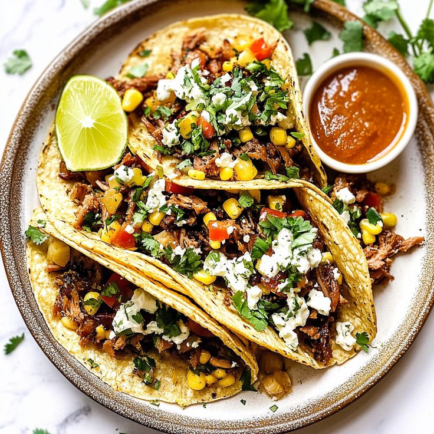
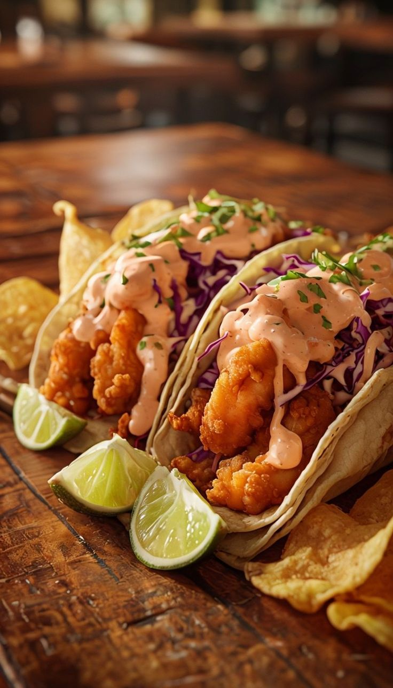
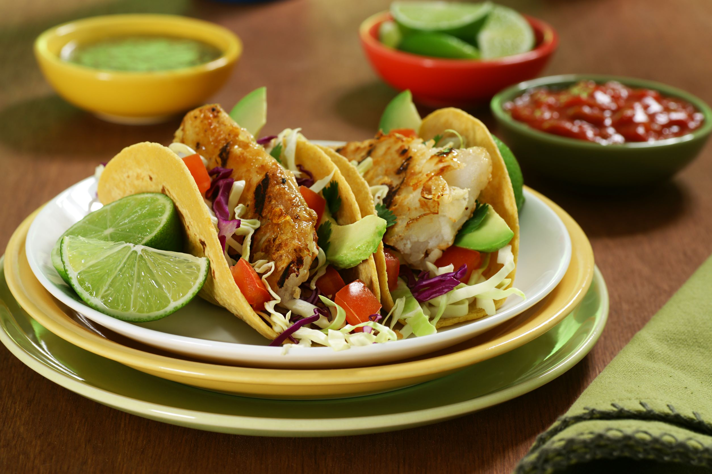
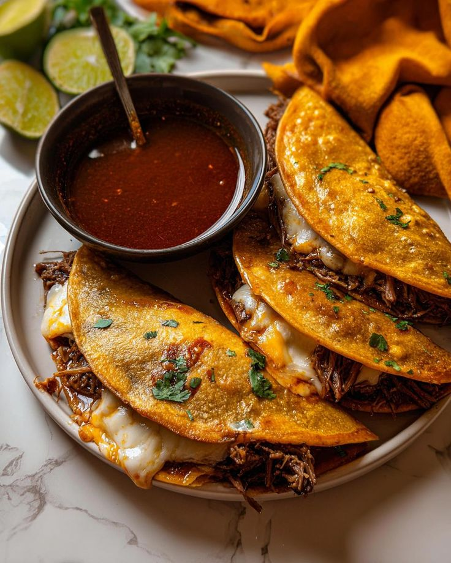

Al pastor est une methode de cuison de la viande originaire du centre du Mexique,pour la preparation de tacos.Bien que le format du trompo de viande rappelle celui utilisé pour la confection de kebabs ou shawarma moyen-orientaux,la viande est quasi exclusivement celle du porc

Inspirés des délicieux tacos de rue du Mexique,les savoureux tacos Carne asada sont remplis de bifteck mariné dans un mélange fruité et épicé de jus d'orange et de lime et de sauce pimante

Les carnitas sont un plat de la cuisine mexicaine originaire de l'Etat de Michoacan.Les carnitas sont élaborées en faisant braiser ou mijoter du porc dans de l'huile ou du lard pour l'attendir.

Voir comme ingredients"/1 limon,ralladura y jugo /2 limas,cascara y jugo 0,25 taza de ajo picado,0,25 taza de aciete de oliva virgen extra,dividido /1 libra de filetes de tilapia,cortados en trozos de 1 pulgada /12 torillas de maiz pequenas /0,25 taza de cebolla /0,25 taza de cilantro picado "

La libirria est une variante régionale de la barbacoa de l'ouest du Mexique,principalement à base de chevre,de boeuf ou d'agneau.
